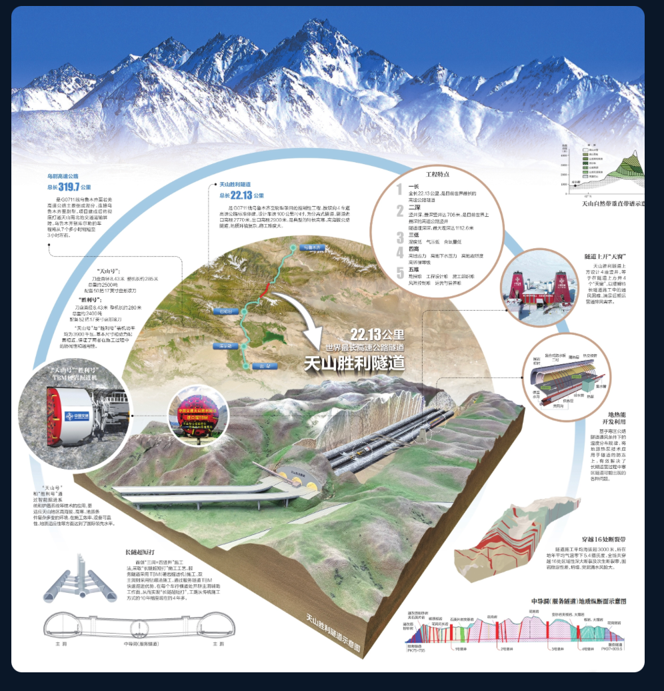
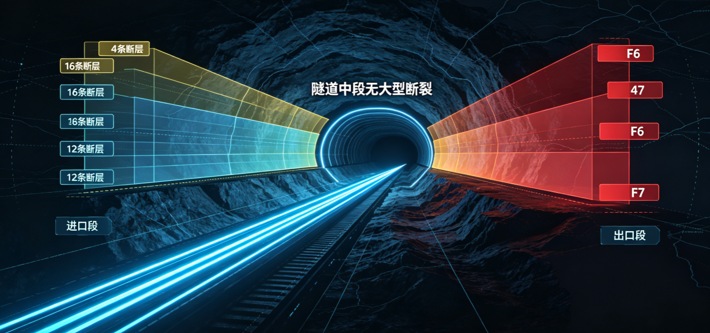
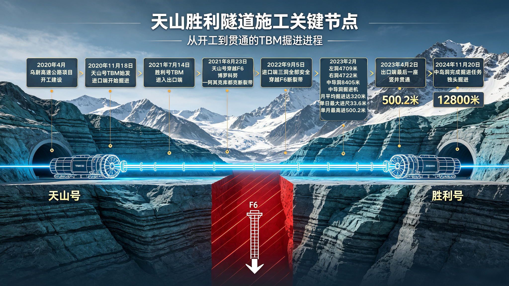
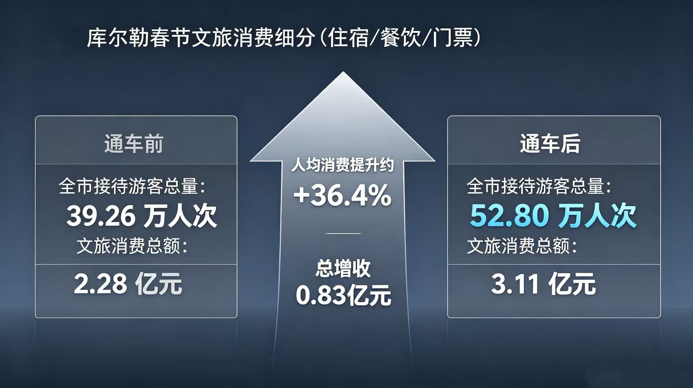
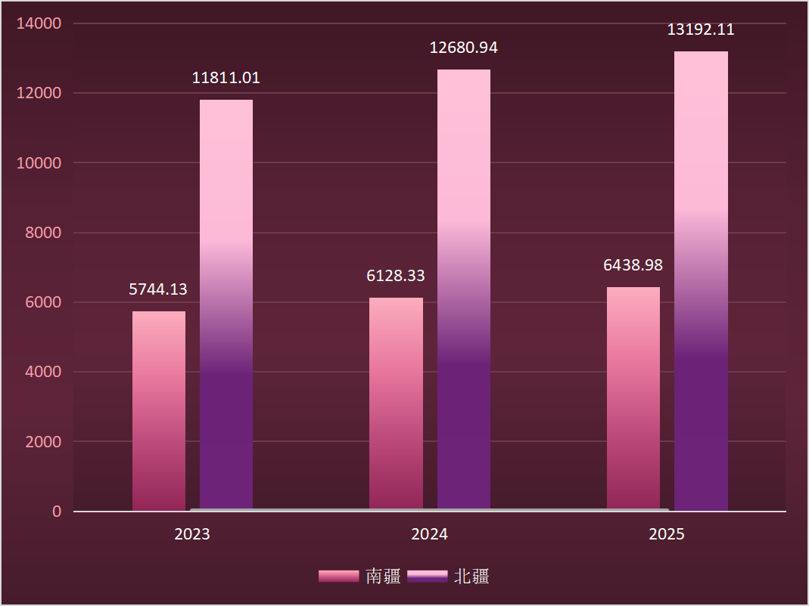
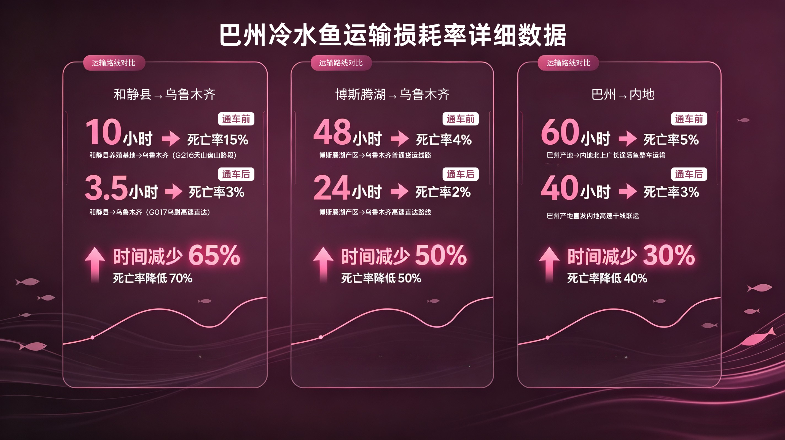

天山山脉海拔地形示意图：准噶尔盆地（约500米）— 北天山（2000-3000米）— 中天山（3000-4000米）— 南天山（4000-5000米）— 塔里木盆地（约1000米）
横亘在准噶尔盆地与塔里木盆地之间的天山，是一道海拔落差超过 4000 米的天然屏障。北坡的乌鲁木齐海拔约 800 米，越过 4280 米的胜利达坂，南坡的库尔勒已降至 930 米。直线距离不过 250 公里，但实际行驶里程却接近 470 公里——天山，让"近在咫尺"变成了"远在天边"。
乌鲁木齐与库尔勒之间的直线距离仅约 250 公里，相当于北京到石家庄。但天山横亘其间，实际公路里程达 470 余公里，驾车需翻越海拔 3000 米以上的达坂，冬季常因积雪结冰中断通行。据新疆交通运输厅统计，全年能够稳定通行的翻越天山通道，长期以来仅有一条——绕行托克逊，耗时超过 7 小时。
0
乌鲁木齐—库尔勒，老路车程
"常年行走在乌鲁木齐与库尔勒之间的货运司机眼中，这意味着清晨出发、傍晚抵达的漫长奔波，若遇大雪封山，一等就是好多天。"——中交新疆交通投资发展有限公司总工程师苗宝栋如此描述老路的日常。
216 国道养护工坎阶别克·哈吾斯力力说得更直接："以后去库尔勒就不用翻越危险的老虎口或者绕行 500 公里了。"
—— 216国道养护工 坎阶别克·哈吾斯力力
对于世代生活在天山两侧的人们来说，这条路不是选项，是刚需。南疆的羊要进北疆的市场，北疆的货要下南疆的县城，病人要转院，学生要回家——天山阻隔的，从来不只是风景。
新疆公路总里程变化
| 年份 | 公路里程（万公里） |
|---|
| 1949 | 0.34 |
| 1960 | 1.87 |
| 1978 | 2.38 |
| 2024 | 23 |
| 2025年底 | 24.6 |
数据来源：新疆交通运输厅公路里程统计（1949-2025）
新疆的公路史，是一部用脚步丈量荒漠的拓荒史。1949 年，新疆全区公路通车里程仅有 3361 公里——不及今天北京一座城市的地铁运营里程。到 1978 年改革开放前夕，这个数字增长到 2.38 万公里。2024 年底，新疆公路总里程突破 23 万公里，2025 年底达到 24.6 万公里。
76 年间，新疆公路里程增长了 72 倍，但天山始终是横亘在南北疆之间的"最后一公里"——不是没有路，是没有一条不绕远、不封山、不冒险的路。
1949 年 0.34 万公里 → 2025 年 24.6 万公里，增长 72 倍。但截至 2020 年乌尉高速开工前，跨越天山的高等级公路数量为零。新疆"疆内环起来"的交通格局，天山是最后一块拼图。
22.13 公里是什么概念？它相当于 5 座南京长江大桥首尾相连，比排名第二的挪威洛达尔隧道（24.5 公里，但非高速公路标准）在高速公路隧道分类中更胜一筹。天山胜利隧道以 22.13 公里的单洞长度，成为世界高速公路隧道的新标杆。
但"最长"只是表象。"最深"和"最难"才是它的底色：最大埋深 1112.6 米，相当于把 3 座广州塔"小蛮腰"叠起来埋进山体；穿越 16 条地质断裂带，高寒、高海拔、高地应力、高地震烈度、高环保要求——工程界称之为"五高"禁区。
天山胜利隧道 22.13km（世界最长高速公路隧道）| 最大埋深 1112.6m | 2 号竖井深 707m（世界最深高速公路竖井）| 穿越 16 条地质断裂带 | 高地应力达 22 兆帕

天山胜利隧道工程总览：乌尉高速总长319.7公里，隧道全长22.13公里（世界最长高速公路隧道），最大埋深1112.6米，穿越16条地质断裂带，采用"三洞+四竖井"长隧短打方案。
乌尉高速全长 319.7 公里，双向四车道，设计时速 100-120 公里。隧道采用全球首创的"三洞 + 四竖井"方案——在传统左右双主洞之间增设中导洞，以硬岩掘进机（TBM）先行打通，再向两侧主洞开辟 14 个作业面同时施工，实现"长隧短打"。
乌尉高速 319.7km 全线 | 隧道 22.13km | 双向 4 车道 | 设计时速 100-120km/h | 三洞+四竖井方案 | 14 个作业面同时施工 | 工期从 72 个月压缩至 52 个月
"天山打隧道，就像在豆腐脑里做工程。"在破碎带里掘进，塌方、岩爆、软岩大变形、突涌水随时可能发生。干了一辈子基建的他，也感受到了前所未有的压力。
—— 中交新疆交通投资发展有限公司总工程师 苗宝栋
16条地质断裂带分布
图上的 16 条红线，是 16 道"鬼门关"。北段进口群集中了 12 条断裂带，南段出口群 4 条。其中 F6 和 F7 是两条宽度超过 350 米的超大型破碎带，其余 14 条为中小型次生派生断裂。
地质纵断面显示，隧道穿越的岩层从炭质板岩到花岗闪长岩，从石英片岩到断层破碎带，硬度、稳定性、含水率天差地别。
16 条断裂带 | 北段 12 条（进口群）+ 南段 4 条（出口群）| F6、F7 宽度超 350m | 岩层类型：炭质板岩、花岗闪长岩、石英片岩等

天山胜利隧道地质纵断面示意图：展示炭质板岩、花岗闪长岩、石英片岩等岩层分布及断层产状，全线共穿越16条断层破碎带
"这是我工作近30年遇到的最复杂的工程。"
—— 乌尉项目总经理部总经理 周政
72 → 0个月
传统钻爆法预计工期 → 创新"主洞+中导洞"工法压缩为实际工期（个月）
如果采用传统的"打眼放炮"钻爆法，打通天山胜利隧道需要 72 个月——整整 6 年。但"老乡们等不起"，苗宝栋说，"创新是唯一选择。"
中交集团为天山胜利隧道量身定制了两台硬岩掘进机——"天山号"和"胜利号"。它们像两条钢铁巨龙，在多种世界级复杂地层中安全、高效地掘进。配合"主洞+中导洞"的创新工法，14 个作业面同时推进，最终将工期从 72 个月压缩至 52 个月。
传统钻爆法 72 个月 → 创新工法 52 个月 | 工期压缩 20 个月，节约近 28% | 2024.12.30 贯通 | 2025.12.26 全线通车

天山胜利隧道施工关键节点时间线
"这是技术突破的胜利，是生态保护的胜利，更是为新疆人民开辟幸福之路的胜利。"
—— 中交新疆交通投资发展有限公司总工程师 苗宝栋，2024年12月30日天山胜利隧道贯通时
0
通车首个春节，库尔勒文旅消费总额

通车前后春节文旅消费对比：全市接待游客总量 39.26万人次→52.80万人次（+34.5%）；文旅消费总额 2.28亿元→3.11亿元（+36.4%）；人均消费提升约+36.4%；总增收0.83亿元
通车后的第一个春节，库尔勒交出了一份令人意外的答卷。全市接待游客总量从 39.26 万人次跃升至 52.80 万人次，增长 34.5%；文旅消费总额从 2.28 亿元增至 3.11 亿元，增长 36.4%。仅一个春节，库尔勒就增收 8300 万元。
游客 39.26 万 → 52.80 万（+34.5%）| 消费 2.28 亿 → 3.11 亿（+36.4%）| 人均消费提升约 36.4% | 总增收 0.83 亿元
"乌尉高速通车，让一日内往返体验南北疆不同风情的愿望得以实现。"
—— 巴州昆仑四运旅游服务有限公司副总经理 李震
"马上就是博斯腾湖冬捕活动了，乌尉高速全线通车会带来更多游客，我们已经做好了充足的准备。"
—— 巴音郭楞州博湖县文旅局局长 袁阳（据人民日报报道）
天山—沙漠—绿洲三大景观带被一条路串联，沿线文旅产业加速从"打卡式"向"深度游"转型。
"乌尉高速建成通车，于新疆加快丝绸之路经济带核心区交通枢纽建设具有重要意义。"
—— 自治区交通运输厅党委书记、副厅长 郭胜
南北疆经济协同发展

南北疆GDP差距比值（亿元）：2023年 南疆5744.13 / 北疆11811.01（比值2.06）；2024年 南疆6128.33 / 北疆12680.94（比值2.07）；2025年 南疆6438.98 / 北疆13192.11（比值2.05）
南北疆的经济差距，是新疆发展最核心的结构性问题。2023 年，南疆五地州 GDP 合计 5744 亿元，北疆 11811 亿元，差距比值 2.06。2024 年，差距比值微升至 2.07。2025 年，乌尉高速通车元年，差距比值回落至 2.05。
0.02 的微小变化，背后是南疆经济增速的加快。交通基础设施的改善，正在逐步缩小这道横亘多年的发展鸿沟。
2023 年 南疆 5744 亿 / 北疆 11811 亿（比值 2.06）| 2024 年 南疆 6128 亿 / 北疆 12681 亿（比值 2.07）| 2025 年 南疆 6439 亿 / 北疆 13192 亿（比值 2.05）——差距比值首次回落
"乌尉高速全线通车后，有效贯通南北疆经济脉络，让区域资源流动更通畅、产业联动更紧密，构建起区域协同发展新格局。"
—— 自治区交通运输厅运输管理处干部 王瑞
"一直都盼着。乌尉高速通车了，我们的'致富快车'也可以出发了。"
—— 乌鲁木齐市乌鲁木齐县萨尔达坂乡萨尔乔克村党支部书记 哈力夏·夏依木尔旦
物流变革：和静县牧业
和静县牧业运费成本（陆运）对比：费用成本（过路费+烧气）通车前2050元→通车后1900元；时间成本通车前2天1个往返→通车后1天1个往返
和静牧业：运费降了，羊能进乌鲁木齐了
巴音布鲁克振鑫牧业的孟克巴图算了一笔账：通车前，一趟货车到乌鲁木齐，费用 2050 元，2 天才能跑一个往返；通车后，费用降到 1900 元，1 天就能跑完一个往返。"以前天山阻隔，我们南疆的羊很难进入乌鲁木齐市场。"孟克巴图说，通车后客户主动找上门，公司成立以来第一次有这么多订单。
和静牧业运费 2050 元 → 1900 元 | 时间 2 天 → 1 天
巴州冷水鱼：从 8% 损耗到近零

巴州冷水鱼运输损耗率：和静县→乌鲁木齐 通车前10小时/死亡率15%→通车后3.5小时/死亡率3%（时间减少65%，死亡率降低70%）；博斯腾湖→乌鲁木齐 通车前48小时/死亡率4%→通车后24小时/死亡率2%（时间减少50%，死亡率降低50%）；巴州→内地 通车前60小时/死亡率5%→通车后40小时/死亡率3%（时间减少30%，死亡率降低40%）
巴州冷水鱼：从 8% 损耗到近零
巴州万锦水产的许纪伟更直观地感受到了变化：和静到乌鲁木齐的冷水鱼运输，时间从 10 小时压缩到 3.5 小时，死亡率从 15% 降至 3%——时间减少 65%，死亡率降低 70%。博斯腾湖到乌鲁木齐的运输也从 48 小时压缩到 24 小时。公司年产 50 余吨冷水鱼，通车后预计年产值从 300 万增长到 450 万。
冷水鱼 和静→乌市 10h/15% 死亡率 → 3.5h/3% | 博湖→乌市 48h/4% → 24h/2% | 巴州→内地 60h/5% → 40h/3%
"高速开通后，我们往各地发运产品会更方便，物流成本也能降低不少。目前公司年产商品鱼50余吨，年产值大概300万，通车后运输效率提升会极大带动销售增长，预计年产值能达到450万左右。"
—— 巴州万锦水产有限责任公司负责人 许纪伟
"依托这条路，和静县光热滋养的高色素辣椒、草原雪水哺育的牛羊肉等特色农产品，可实现3小时直达北疆核心市场，彻底打破长期以来的交通瓶颈，推动农业向高质量、规模化、品牌化转型。"
—— 和静县农业农村局党组成员、副局长 单丁苏荣
0
2025年新疆全年接待游客量
2015年
2025年
游客花费3700 亿元（2025）
同比增速+8.0%
新疆旅游业的增长曲线，是一条陡峭的上升线。2015 年，全年接待游客 0.61 亿人次；2019 年突破 2 亿大关，达到 2.13 亿人次；经历了 2020 年的短暂回落后，2023 年反弹至 2.65 亿人次；2025 年，全年接待游客 3.23 亿人次，游客花费 3700 亿元，同比分别增长 8% 和 8.4%，创历史新高。
从 0.61 亿到 3.23 亿，十年间增长了 5.3 倍。旅游业的爆发式增长，背后是独库公路、阿禾公路、乌尉高速等一条条"最美公路"的相继通车。"新疆是个好地方"从一句口号变成了 3.23 亿人次的选择。
2015 年 0.61 亿 → 2019 年 2.13 亿 → 2020 年 1.58 亿 → 2023 年 2.65 亿 → 2025 年 3.23 亿 | 十年增长 5.3 倍 | 2025 年游客花费 3700 亿元
0
2030年规划目标：年接待游客
2026 年自治区政府工作报告提出，深入实施旅游兴疆战略，"十五五"期间力争年接待游客突破 5 亿人次。乌尉高速只是起点——"十五五"启程，自治区交通运输厅党委书记郭胜表示，将"锚定加快建设交通强国目标任务"。
2026 年 6 月上旬，全疆累计接待游客 1120 万人次，同比增长 7.55%。独库公路沿线、赛里木湖景区日均接待量分别同比增长 35% 和 41%。自驾游占总出行比例的 87.32%，深度体验式旅游正在取代打卡式观光。
2030 年目标 5 亿人次 | 2026 年 6 月上旬 1120 万人次（+7.55%）| 赛里木湖日均 12.6 万人次（+41%）| 自驾游占比 87.32%
"数字不重要，重要的是这些工程是否真正造福人民。"
—— 中交新疆交通投资发展有限公司总工程师 苗宝栋
"'十五五'启程，我们将锚定加快建设交通强国目标任务。"
—— 自治区交通运输厅党委书记 郭胜
从天山胜利隧道望出去，乌尉高速往东可通过京新高速衔接京津冀，通过连霍高速衔接长三角；往南通过西和高速衔接西部陆海新通道，通达粤港澳大湾区和成渝地区。这条路不仅连接了乌鲁木齐和库尔勒，更将成为中国东部经济圈与亚欧国家连通的重要枢纽。
正如那位 26 岁的新疆导游迪丽努尔·吐尔逊对台湾游客说的那句话，点燃了无数网友的共鸣："不是打穿天山容易，而是天山那头有人民。"
穿越天山，从来不只是工程问题。